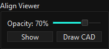
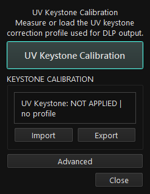
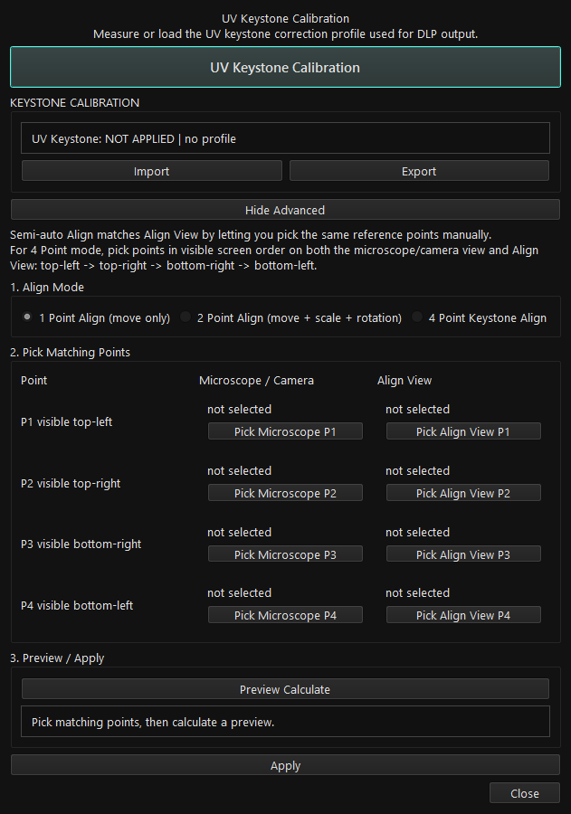
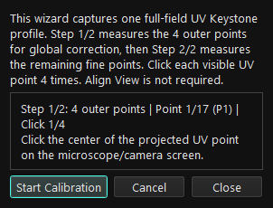
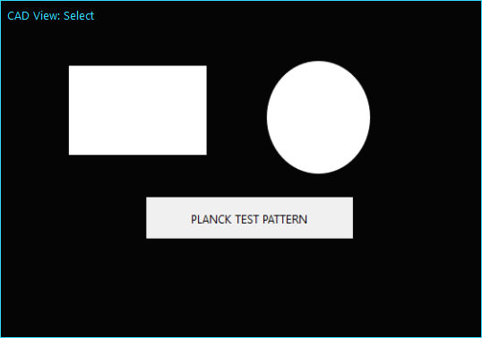
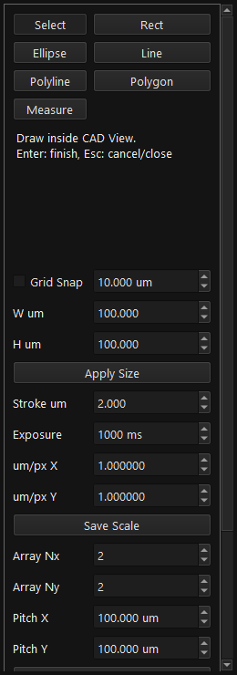
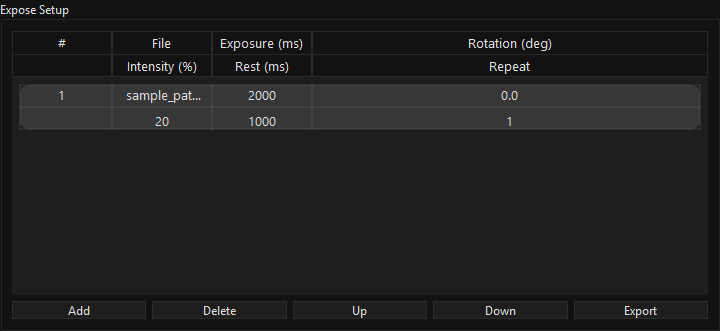
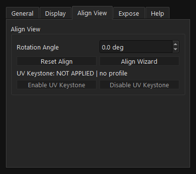

MASKLESS LITHO v2.1.5
PLANCK INC 마스크리스 리소그래피 장비용 Windows 일반 버전 운용 매뉴얼입니다.
실행 파일: maskless_v2_1_5.exe / maskless_v2_1_5_fast.exe
v2.1.5는 Display Apply 검증과 첫 수동 LED 패턴 확인 절차를 강화했습니다. 현재 일반 버전에는 Motorized Focus가 포함되지 않습니다.

Quick Start
장비 연결, 초기화, 화면 설정, 패턴 입력, 정렬, 노광을 차례대로 진행합니다.
- USB 장비 제어 연결과 DLP 영상 연결을 확인하고
maskless_v2_1_5.exe를 실행합니다. - 실제 노광에서는
Setting > Expose > TEST Mode를 끄고Initialize를 누릅니다. 초기화 실패가 있으면 해결 후 진행합니다. - Windows에서 DLP를
1920x1080, 배율100%로 설정합니다.Setting > Display에서 실제 DLP를 선택하고Apply하여 검정 출력창을 확인합니다. Load image로 패턴을 불러옵니다. GDS는 현재 렌즈의 CAD scale을 먼저 저장한 후Load GDS로 변환합니다.Align Viewer > Show로 외부 현미경/카메라 영상 위에 정렬합니다. 필요하면Align Wizard를 사용합니다.- UV Keystone을 사용하면 현재 렌즈와 DLP에 맞는 profile이
APPLIED (ON)인지 확인합니다. Intensity 단위와 렌즈도 확인합니다. Expose Setup > Add로 추가하고 각 행의 Exposure, Rotation, Intensity, Rest, Repeat를 확인합니다. 수동LED ON은 별도 기능이며 Sequence의 필수 준비 단계가 아닙니다.Start로 실행합니다. 중단 시Stop을 누르고 검정 출력 및 장비 상태를 확인합니다. 수동 점등은 Manual LED ON 절차를 따릅니다.
- 작업자 화면과 DLP 화면을 구분하고 영상 케이블이나 Windows 배율을 작업 중에 바꾸지 않습니다.
- 첫 LED 확인창이 열려 있는 동안에도 이미 UV가 조사될 수 있습니다. 확인 시간을 무조사 시간으로 계산하지 않습니다.
- TEST Mode는 실장비 노광이나 첫 점등 확인을 검증하지 않습니다.
Safety
출력 상태와 오류 메시지를 확인하고 다음 작업으로 진행합니다.
- UV/DLP는 장비의 차광 및 운용 절차에 따라 사용합니다. 노광 시간, Intensity, 렌즈, 샘플 위치를 먼저 확인합니다.
- 검정 화면은 영상 출력 상태입니다. LED OFF와 전류 0 확인을 대신하지 않습니다. 오류가 남으면 다음 노광을 시작하지 않습니다.
- 노광, 수동 LED 준비/점등, 첫 패턴 확인 중에는
Display > Apply를 사용할 수 없습니다. - Anti-vibration은 FAN을 끈 뒤 약 500 ms 후 점등을 시도하며, 수동 점등에는 60초 과열 제한이 있습니다. 종료 후 FAN 복구 실패도 확인해야 합니다.
- LED OFF, 전류 초기화, FAN 복구 실패는 재시도와 다음 노광 차단을 유발할 수 있습니다. 검정 화면이 보여도 경고를 해결해야 합니다.
- 종료 시 출력과 타이머가 먼저 정리됩니다. 장비 OFF 확인 실패 시 종료가 막힐 수 있으며, CAD 저장 확인에서 Cancel 또는 저장 실패 시 편집 내용을 유지합니다.
Install/Run
공식 릴리즈에서 단일 exe 또는 Fast Portable을 선택합니다.
- v2.1.5 릴리즈에서
maskless_v2_1_5.exe를 내려받아 실행합니다. zip 형태는maskless_v2_1_5.zip을 압축 해제합니다. - 반복 실행 속도가 중요하면
maskless_v2_1_5_fast.zip을 압축 해제하고 폴더 안의maskless_v2_1_5_fast.exe를 실행합니다._internal폴더를 함께 유지합니다. - 배포 파일은 Python/gdstk 별도 설치가 필요 없습니다. 장비 드라이버는 제조사 정책에 따라 설치하며, 현미경 카메라는 기존 외부 카메라 프로그램을 사용합니다.
- 업데이트 전 사용자 설정, LUT, CAD scale, Keystone profile을 백업합니다.
SHA256SUMS.txt로 배포 파일 무결성을 확인할 수 있습니다.
cd C:\GitProjects\MASKLESSLITHO
python -m venv venv64
.\venv64\Scripts\python.exe -m pip install -r requirements.txt
.\venv64\Scripts\python.exe main.py.\venv64\Scripts\python.exe build_exe.py
.\venv64\Scripts\python.exe build_exe_fast.pyrequirements.txt는 일반 버전용입니다. Focus용 소스나 라이브러리 설치가 일반 앱 실행 조건은 아닙니다.Main Window
장비 초기화에서 패턴 입력, 정렬, 노광까지 메인 창에서 이어집니다.
| 영역 | 역할 / 확인할 점 |
|---|---|
| Setting | 컨트롤러, Display, Align View, 노광 보정, TEST Mode |
| Initialize | 장비 Power ON 초기화. 실패 시 오류를 해결한 뒤 진행 |
| Pattern Settings | 이미지/GDS 입력, 회전, Intensity, 수동 LED |
| Align Viewer | Show, Opacity, Draw CAD |
| Expose Setup | 행 추가 및 설정, Start / Next / Stop |
DLP Display / Apply
v2.1.5에서 변경된 화면 선택 및 검정 출력 검증 절차입니다.
- 장비를 초기화하고, 출력이 모두 중지된 상태에서 Windows DLP 해상도
1920x1080, 배율100%를 확인합니다. Setting > Display > Connected Monitor List에서 실제 DLP를 선택합니다. 콤보박스 선택만으로 출력 화면은 변경되지 않습니다.Apply를 누르면 기존 검정 보호 화면을 유지하면서 LED OFF, 전류 0 및 readback을 확인합니다.- 같은 화면이면 정상 출력창을 재사용하고, 다른 화면이면 새 검정 출력창의 화면, 해상도, 배율, 전체 영역을 검증한 뒤 선택을 저장합니다.
- 검정 화면과 현재 모니터 표시를 확인한 뒤 패턴 작업을 진행합니다. Apply 자체는 패턴 투사, LED ON 또는 노광을 시작하지 않습니다.

Stop exposure, LED preparation and manual LED output before changing the display.: 먼저 Stop 또는 LED OFF / Cancel로 종료합니다.LED OFF/current 0 could not be confirmed.: 선택은 저장되지 않습니다. USB, 컨트롤러 및 상태를 확인하고 OFF 오류를 해결합니다.- 모니터 분리, 해상도/배율 변경, 출력창 숨김·최소화·삭제 등으로 실제 출력창이 유효하지 않으면 LED 출력이 차단되거나 안전 정리를 요청합니다.
- 연결과 Windows 설정을 복구한 뒤 Display에서 다시 Apply로 검증합니다. 저장된 모니터가 없거나 식별이 모호하면 임의 화면으로 출력하지 않습니다.
Pattern Settings
패턴 파일, 회전, Intensity, 수동 점등을 설정합니다.
Load image: PNG/BMP/JPG 등 지원 이미지를 불러옵니다. 로드된 파일명과 DLP 해상도를 확인합니다.Load GDS: GDS/GDS2에서 layer/datatype과 crop frame을 선택해 흑백 DLP PNG로 변환합니다.Image Rotation (deg): 패턴 회전값. Sequence에 추가한 뒤에는 해당 행의 Rotation도 확인합니다.Intensity: LUT가 꺼져 있으면 %, 켜져 있으면 선택 렌즈의 광량 기준 단위를 확인합니다.LED ON: 준비와 안전 확인 후 현재 패턴을 수동 출력합니다. 준비 중에는Preparing LED... (Cancel), ON 명령 성공 후에는LED OFF로 바뀝니다.

Manual LED ON
첫 수동 점등은 현미경 카메라에서 실제 패턴이 나타난 후 확인합니다.
- 이미지, 초기화, Display Apply, Intensity, UV Keystone 상태를 확인하고
LED ON을 누릅니다. - 중앙
DLP LED startup창에Preparing DLP. Please wait...가 표시됩니다. USB 연결, 준비 상태, LED OFF 및 전류 readback 일치를 확인합니다. - 준비 확인은 최대 5초의 소프트웨어 제한을 사용합니다. Anti-vibration이면 FAN 대기 후 점등 직전에도 장비와 전류를 확인합니다.
- 첫 ON 명령이 성공하면
Waiting for the first projection. Please wait...로 바뀌며 창이 유지됩니다. 현미경 카메라에 패턴이 보일 때만Pattern visible을 누릅니다. - 확인 시에도 연결, 준비 상태, 전류와 실제 출력창을 다시 검사합니다. 같은 초기화 세션의 다음 ON에는 추가 확인이나 고정 10초 대기가 없습니다.


LED OFF / Cancel, Esc, 창 닫기는 LED OFF, 전류 0, 검정 출력의 안전 종료를 요청합니다. 준비 중 메인 버튼을 다시 눌러도 취소합니다.- 첫 ON 응답 후 30초 동안 확인하지 않으면 자동 종료를 요청합니다. 이 시간에도 빛은 이미 켜져 있을 수 있습니다.
Manual exposing...경과 시간은 ON 명령 응답 기준이며 실제 광 출력의 시작 시각이나 선량을 자동 측정하지 않습니다.- 다시 Initialize하거나 장비, 컨트롤러, 화면 상태가 바뀌면 첫 확인을 다시 받습니다. TEST Mode 확인은 실장비 확인 완료로 저장하지 않습니다.
- 네이티브 DLL 호출이 멈추거나 오래 걸리면 UI와 취소 응답도 반환까지 지연될 수 있습니다. 늦게 돌아온 성공 응답은 정상 점등으로 받아들이지 않고 안전 종료를 요청합니다.
APPLIED (ON): 현재 렌즈/DLP와 호환되는 Keystone profile로 이미지를 보정합니다. 검증 또는 생성 실패 시 점등을 중단합니다.NOT APPLIED/ profile 없음: UV Keystone 역보정 없이 출력합니다. Compensation이 활성화돼 있으면 별도로 적용됩니다.- 활성 Compensation 파일을 읽을 수 없으면 원본으로 조용히 대체하지 않고 경고합니다.
Standard Edition
일반 버전의 제공 범위와 Motorized Focus 변경사항입니다.
- v2.1.4부터 일반 버전의 Motorized Focus 버튼과 내장 실행 기능이 제거됐으며 v2.1.5에도 포함되지 않습니다.
- 일반 배포본에서
--motorized-focus옵션은 종료 코드 2로 거부됩니다. 예전 메뉴얼의 내부 모드 실행 절차를 사용하지 않습니다. - 단일 exe와 Fast Portable 모두 Focus 소스, ToupCam SDK, OpenCV, 모터 통신 라이브러리를 포함하지 않습니다. Pro 제공은 향후 계획이며 현재 출시 기능이 아닙니다.
- PNG, Draw CAD, GDS, UV Keystone, Modern/Legacy DLP 기능은 유지됩니다. Draw CAD는 처음 열 때 관련 편집기를 불러옵니다.
Align Viewer
외부 카메라 영상 위에 패턴을 겹쳐 표시합니다.
Show로 표시/숨김을 전환하고Opacity로 투명도를 조절합니다.- 작업자 화면에서 창을 이동하고 크기를 조절합니다. Setting > Align View에서 위치, 크기, 회전 및 Reset Align을 관리합니다.
- 화면 overlay 정렬과 실제 DLP의 UV Keystone 역보정은 별개입니다. 화면에서 잘 맞는다고 DLP 왜곡 보정이 완료된 것은 아닙니다.
Draw CAD는 현재 Align View의 이미지 평면을 기준으로 엽니다. DLP 화면 위에 편집창을 놓지 않습니다.

Align Wizard
UV Keystone 측정과 수동 1/2/4 Point Align의 진입점입니다.
Setting > Align View > Align Wizard에서 엽니다. UV Keystone Calibration, 상태, Import, Export를 확인합니다.Import는 .maskkeystone을 불러오며 현재 렌즈, DLP 식별정보와 해상도 호환성 검사를 받습니다. 다른 장비 profile을 무조건 사용할 수 있는 기능은 아닙니다.Export는 현재 profile을 내보냅니다. 렌즈, 장비, 화면 조건이 바뀌면 재측정이 필요할 수 있습니다.

Advanced를 펼쳐 수동 정렬을 선택합니다. 1 Point는 이동, 2 Point는 이동/스케일/회전, 4 Point는 원근 정렬에 사용합니다.- 카메라 영상과 Align View의 같은 기준점을 같은 순서로 선택하고
Preview Calculate로 계산 결과를 확인한 뒤Apply합니다. - 반복 적용 시 점 순서와 회전값을 확인합니다. Reset Align은 overlay 정렬을 초기화하는 기능이며 Keystone profile의 Enable/Disable과 구분합니다.

UV Keystone Calibration
4점 전역 보정과 17점 full-field 측정을 하나의 절차로 수행합니다.
- Initialize와 Display Apply를 완료합니다. DLP는 native 1920x1080 / 배율 100%여야 하며, 카메라/메인 화면과 DLP의 native 해상도 일치 조건도 확인합니다.
- 현재 렌즈를 확인하고
Align Wizard > UV Keystone Calibration > Start Calibration을 선택합니다. Align View 표시는 필수가 아닙니다. - Step 1/2에서 외곽 4점, Step 2/2에서 나머지 13점을 측정합니다. 화면에 보이는 UV 기준점의 중심을 각각 4회 클릭합니다.
- 각 측정에는 60초 제한이 있습니다. Cancel로 중단할 수 있으며 LED OFF 확인 실패 시 profile 저장과 성공 처리가 중단됩니다.
- 완료 시 저장된 .maskkeystone과 적용 상태를 확인합니다. 보정 검증 패턴 표시는 LED OFF 상태를 유지하므로 그것만으로 실제 광학 검증이 끝난 것은 아닙니다.


APPLIED (ON): 보정 활성.NOT APPLIED (OFF): 파일은 있지만 비활성.no profile: 사용 가능한 profile 없음.- Setting > Align View의
Enable UV Keystone/Disable UV Keystone은 파일 삭제 없이 적용을 전환합니다. - Profile은 렌즈, DLP 식별정보, 해상도와 함께 저장됩니다. 호환되지 않는 profile은 경고 후 차단되며 수동 LED, Sequence, CAD Expose Now에도 검사가 적용됩니다.
GDS Import
선택 layer를 실제 DLP 영역의 흑백 PNG로 변환합니다. CAD 도형으로 가져오는 기능은 아닙니다.
- 현재 렌즈의 CAD scale profile을 저장하고 DLP Display Apply를 완료합니다.
- Load GDS에서 .gds 또는 .gds2를 열고 layer/datatype을 선택합니다. 선택이 바뀌면 bounds, preview, Frame check가 갱신됩니다.
- 흰색 도형은 선택 GDS geometry이며 노란 사각 frame은 DLP crop 영역입니다. frame을 드래그하거나 Crop center X/Y (um)를 입력합니다.
- 휠, Zoom In/Out, Fit View로 미리보기를 조절합니다. Center Frame on GDS는 frame을 선택 layer 중심으로 이동합니다. 확대는 preview 조작이며 CAD scale 변경과 다릅니다.
- Frame check에서 실제 픽셀이 포함되는지 확인하고 OK를 눌러 변환합니다. 변환 중에는 다른 LED/노광/CAD/Keystone 출력이 차단됩니다.
- 완료된 PNG를 확인한 후 Add > Start로 사용합니다. 취소한 작업의 늦은 결과는 적용하지 않습니다.

No selected GDS geometry inside the current DLP frame.: layer/datatype을 확인하고 frame을 도형 쪽으로 이동합니다.Geometry intersects the frame but may be smaller than one pixel.: 렌즈 scale과 도형 크기를 확인합니다. 단순 preview 확대는 출력 픽셀 크기를 바꾸지 않습니다.Selected GDS geometry produced no visible pixels.: layer, crop center, scale을 다시 확인합니다. bounds만 겹쳐도 실제 raster가 비어 있을 수 있습니다.
Draw CAD
Align View의 이미지 평면에서 실제 치수 기반 도형을 작성합니다.
- 이미지 로드, DLP 설정, Align Viewer > Show를 완료한 후 Draw CAD를 누릅니다. 첫 열기는 편집기 지연 로딩으로 시간이 걸릴 수 있습니다.
- Select는 선택/이동/handle 편집, Rect/Ellipse/Line/Polyline/Polygon은 도형 작성 도구입니다.
- W um, H um, Stroke um으로 치수와 선폭을 지정합니다. Grid Snap은 지정한 um 간격에 점을 맞춥니다.
- Measure는 거리와 각도를 확인하는 용도이며 노광 도형에는 포함되지 않습니다.


- 현재 렌즈의 um/px X/Y 값을 확인하고 Save Scale로 저장합니다. 화면상 크기와 실제 출력 치수가 맞는지 기준 패턴으로 확인합니다.
- GDS Import도 렌즈별 CAD scale을 사용합니다. 렌즈 변경 후 이전 scale을 그대로 사용하는 실수를 피합니다.
- 정렬된 overlay의 위치/회전과 DLP 출력 보정은 서로 다른 단계입니다. 출력 전 PNG와 적용 profile을 함께 확인합니다.
CAD Output
편집 문서 저장, PNG 생성, 패턴 적용 및 1회 노광을 구분합니다.
- Save CAD / Load CAD: 편집 가능한 .maskcad 문서 저장과 다시 열기입니다.
- Export PNG: DLP 해상도 PNG와 함께 paired .maskcad를 저장합니다. PNG만으로 편집 도형이 복원되는 것은 아닙니다.
- Include Base Image: 기존 패턴 이미지도 CAD 도형과 합성합니다. 도형만 출력할지 원본도 포함할지 확인합니다.
- Apply: 만든 PNG를 Pattern Settings에 불러옵니다. 이 버튼 자체는 LED ON이 아닙니다.
- Expose Now: 확인 후 CAD 결과를 1회 노광합니다. 노광 조건과 렌즈를 먼저 확인하며 Display/LED/FAN/Keystone 안전 검사를 받습니다.
- 앱 종료 중 저장 확인에서 Cancel 또는 저장 실패가 발생하면 종료를 취소하고 편집 내용을 유지합니다.

Expose Setup
파일별 조건을 행 단위로 지정해 순서대로 실행합니다.
- Add는 현재 패턴을 추가하고, Delete는 선택 행을 삭제합니다. Up/Down은 순서를 변경하며 Export는 Sequence 목록을 내보냅니다.
- File은 원본 파일, Exposure (ms)는 조사 시간, Rotation (deg)은 회전값, Intensity는 출력 강도입니다.
- Rest (ms)는 대기 시간, Repeat는 반복 횟수입니다. LUT 사용 시 Intensity 단위와 렌즈가 올바른지 확인합니다.
- Start는 실행, Next는 행 종료 후 대기 중 다음 행으로 진행, Stop은 중단입니다. Next가 활성화된 대기 상태에서 샘플 위치 등을 확인한 뒤 진행합니다.

- 모든 행의 경로와 숫자 조건을 확인합니다. 파일이 없거나 읽을 수 없는 행이 있으면 일부만 건너뛰지 않고 전체 시작을 차단합니다.
- 회전은 원본 canvas 크기를 유지하는 출력/preview 기준으로 확인합니다. 행 추가 후 Pattern Settings만 바꿨다면 기존 행 값도 다시 확인합니다.
- UV Keystone/Compensation 실패, 출력창 이상 또는 LED OFF/current/FAN 오류가 있으면 원인을 해결한 뒤 다시 시작합니다.
Calibration LUT
장비와 렌즈에 맞는 LUT로 Intensity를 광량 기준으로 입력합니다.
- Setting > Expose의 Load로 LUT를 불러오고 Calibration을 켭니다. 장비 serial이 일치하지 않으면 적용이 거부됩니다.
- Pattern Settings에서 렌즈를 선택하고 Intensity 및 Sequence의 단위가 %인지 mW/cm²인지 확인합니다.
- LUT는 입력 광량을 LED 전류 설정으로 변환하는 기준이며 실시간 광량 측정 기능이 아닙니다. CAD scale이나 UV Keystone을 대신하지 않습니다.
- 렌즈 변경 시 LUT 렌즈, CAD scale, Keystone profile을 각각 확인합니다.

Compensation
공간적인 출력 편차를 보정하는 mask 파일을 적용합니다.
- Setting > Expose에서 Compensation 파일을 Load한 뒤 ON/OFF 상태를 확인합니다.
- 활성화한 파일이 없거나 읽을 수 없으면 경고하고 출력을 차단합니다. 파일 복구 또는 의도적인 비활성화 후 조건을 재확인합니다.
- Compensation, LUT, CAD scale, UV Keystone은 서로 다른 보정입니다. UV Keystone이 OFF여도 Compensation은 별도로 활성화될 수 있습니다.
Settings
General / Display / Align View / Expose / Help의 다섯 탭입니다.
- 연결, 장비 serial/version/온도, DLP Controller 모드를 확인합니다. 일부 항목은 Legacy 장비에서 지원되지 않습니다.
- Power ON/OFF, Fan ON/OFF는 장비 명령입니다. App Mode의 Dark/Light는 앱 표시 테마입니다.



Legacy DLP
구형 PDC05 컨트롤러에서만 호환 모드를 선택합니다.
- Setting > General > Use Legacy PDC05에서 전환합니다. 모든 출력이 중지된 상태에서 장비 종류에 맞게 선택하고 다시 초기화합니다.
- Legacy driver: Ready 여부를 확인합니다. 장비가 지원하지 않는 version/온도 항목은 미지원으로 표시될 수 있습니다.
- 수동 점등은 Modern/Legacy 모두 전류 readback이 없거나 설정값과 다르면 차단됩니다. 단순히 오류를 피하려고 다른 컨트롤러 모드를 선택하지 않습니다.
TEST Mode
장비 없이 UI와 작업 흐름을 확인할 때 사용합니다.
- Setting > Expose > TEST Mode를 켜고 이미지/GDS/Align View/CAD/Sequence 조작을 확인합니다. 화면 해상도와 모니터 설정 조건은 별도로 확인해야 합니다.
- TEST Initialize는 실장비 정상 초기화를 증명하지 않으며 실제 초기화 실패를 해결하지 않습니다. TEST 첫 패턴 확인은 실장비 확인 완료로 기록하지 않습니다.
- TEST Mode는 장비 전체를 분리하는 설정이 아닙니다. General의 수동 Power/FAN 명령까지 모두 가상화한다고 가정하지 않습니다.
- 실제 출력에서 시작한 종료 작업은 TEST Mode로 바꿔도 생략되지 않습니다. 실제 노광으로 돌아갈 때 TEST Mode를 끄고 Initialize와 Display Apply를 다시 확인합니다.
Data Paths
업데이트 전 사용자 데이터와 보정 profile을 백업합니다.
| 항목 | 기본 위치 |
|---|---|
| Config | %USERPROFILE%\.maskless_v2\config\config.json |
| LUT | %USERPROFILE%\.maskless_v2\config\lut.dat |
| Compensation | %USERPROFILE%\.maskless_v2\config\compensation.mask |
| Logs | %USERPROFILE%\.maskless_v2\logs\ |
| CAD / GDS PNG | %USERPROFILE%\.maskless_v2\cad\ |
| UV Keystone | %USERPROFILE%\.maskless_v2\keystone\*.maskkeystone |
Troubleshooting
메시지와 실제 장비 상태를 함께 확인합니다.
| 증상 | 확인 / 조치 |
|---|---|
| LED 준비가 끝나지 않음 | USB, Initialize, 준비 상태, 전류 readback을 확인합니다. 5초 제한은 소프트웨어 기준이며 DLL 지연 시 취소도 지연될 수 있습니다. |
| ON 후 창이 계속 보임 | 첫 패턴 확인 대기입니다. 카메라에서 패턴을 확인한 뒤 Pattern visible. 보이지 않으면 LED OFF / Cancel로 중단하고 원인을 확인합니다. |
| 30초 뒤 꺼짐 | 첫 ON 응답 후 패턴 확인을 하지 않아 자동 종료가 요청됐는지 확인합니다. |
| Apply가 거부됨 | 준비/점등/노광/확인 대기를 종료합니다. OFF/current 0 오류를 해결한 후 Apply를 다시 누릅니다. |
| DLP에 출력 안 됨 / 화면 유실 | USB와 영상 연결을 구분해 확인합니다. DLP 1920x1080 / 100%, 실제 화면 선택, 초기화, TEST Mode를 확인하고 Display Apply로 재검증합니다. |
| Keystone 적용 차단 | 현재 렌즈, DLP 식별정보, 해상도와 profile의 일치를 확인합니다. 다른 장비 profile은 해당 장비에서 재측정이 필요할 수 있습니다. |
| GDS가 빈 PNG | layer/datatype, 노란 crop frame, CAD scale과 Frame check의 실제 픽셀 존재를 확인합니다. |
| Sequence 시작 실패 | 모든 행의 파일이 존재하고 읽히는지 확인합니다. 안전 오류, 보정 파일, 노광 조건을 함께 확인합니다. |
| Motorized Focus 버튼 없음 | v2.1.5 일반 버전의 정상 구성입니다. 예전 내부 실행 옵션도 제공하지 않습니다. |
| 종료가 막힘 | LED OFF/current/FAN 오류가 남았는지 확인합니다. CAD 저장 Cancel/실패라면 편집을 유지하는 정상 동작입니다. |
| Intensity 단위 / LUT 오류 | Calibration ON/OFF, 렌즈 선택, LUT와 장비 serial을 확인합니다. |
Release Notes v2.1.5
v2.1 이후 운용 절차에 영향을 주는 변경사항입니다.
- Display Apply는 출력 작업 중 차단되며 LED OFF/current 0 readback 및 검정 출력창을 검증한 뒤 화면 선택을 저장합니다.
- 첫 수동 ON은 중앙 준비창과 Pattern visible 확인을 사용합니다. ON 응답 후 30초 미확인 시 종료를 요청합니다.
- LED ON 직전 실제 출력창을 재검사합니다. Sequence, CAD Expose Now, UV Keystone에도 적용됩니다.
- Initialize Power ON 실패를 유지하며, 취소/늦은 응답/오류 뒤 재시도와 FAN 복구를 보강했습니다.
- 일반 버전에서 Motorized Focus와 관련 SDK/통신 라이브러리를 제외했습니다. Draw CAD 지연 로딩 및 Fast Portable 배포를 지원합니다.
- LED 준비 버튼, USB/준비/전류 readback 확인, OFF 즉시 검정 출력, CAD 저장 취소와 장비 미연결 종료 처리를 보강했습니다.
- DLP 1920x1080 / 100% 정책, 저장된 화면 식별, 화면 유실/배율 변경 차단을 적용했습니다.
- Align View 2/4 Point 및 회전 동기화, 렌즈/DLP별 Keystone 호환성, GDS 재파싱 감소와 실제 raster 검사를 반영했습니다.
- LED OFF/current/FAN 오류 유지, 지연 콜백 무효화, 설정 원자적 저장, Sequence 파일 및 Compensation 오류 차단을 반영했습니다.